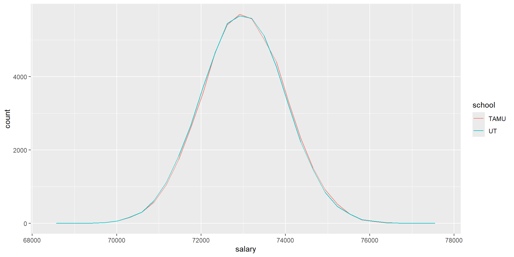
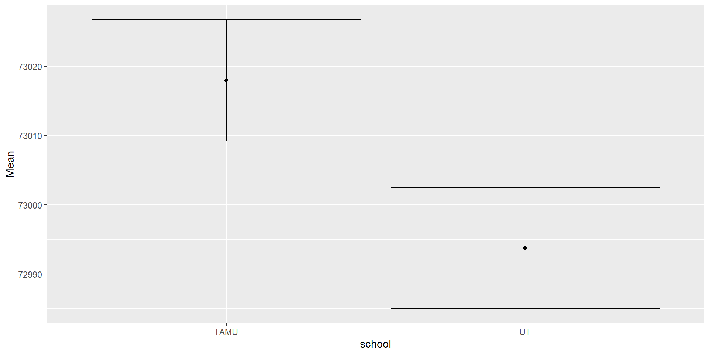
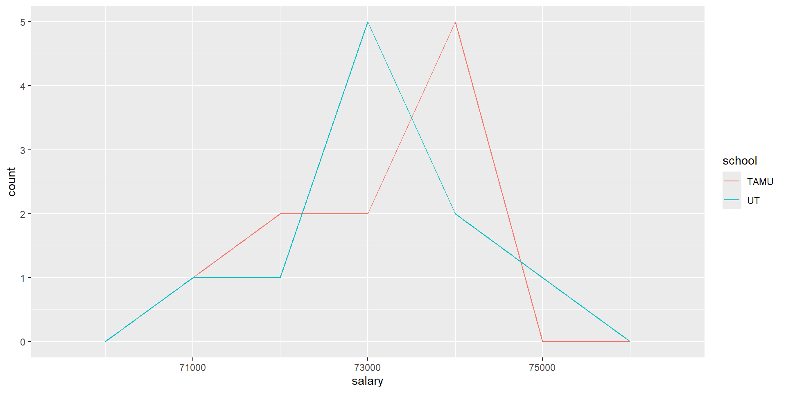
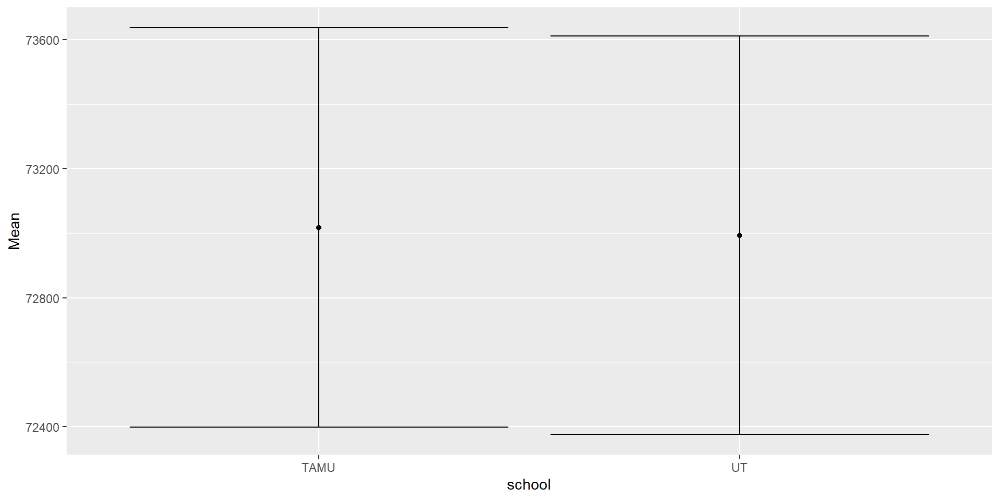

Week 9
Download salsLargeN.csv and salsSmallN.csv
Goal for today
Today, we will be seeing if there is a difference in annual salary between UT grads and Texas A&M grads.
We will look at two studies:
- Large sample size (
salsLargeN.csv) - Small sample size (
salsSmallN.csv)
- Large sample size (
It should be noted that these datasets are fake.
Since we are looking at a difference between means, what plots/analyses should we do in R?
- Frequency polygon
- t-test
- Summary table
- Means plot with 95% confidence interval
Answer: All of the above.
t-test review
- `data$salary outputs a vector of salaries
data$school == "UT"outputs a vector ofTRUEandFALSE.data$salary[data$school == "UT"]outputs the data wheredata$school == "UT"is true (AKA the data for all UT grads)- Therefore,
data$[data$school == "UT"]$salaryoutputs the salary of all UT grads.
data
| school | salary | |
|---|---|---|
| 1 | TAMU | 70892 |
| 2 | UT | 71871 |
| 3 | TAMU | 73517 |
| 4 | UT | 74159 |
| 5 | TAMU | 73058 |
\(\rightarrow\)
data$salary
| salary | |
|---|---|
| 1 | 70892 |
| 2 | 71871 |
| 3 | 73517 |
| 4 | 74159 |
| 5 | 73058 |
\(\rightarrow\)
data$school == "UT"
| school | |
|---|---|
| 1 | FALSE |
| 2 | TRUE |
| 3 | FALSE |
| 4 | TRUE |
| 5 | FALSE |
\(\rightarrow\)
data$salary[data$school == "UT"]
| salary | |
|---|---|
| 2 | 71871 |
| 4 | 74159 |
Slido
In t.test, we want t.test(UT_sals,TAMU_sals), where UT_sals is the salary of all UT grads, and TAMU_sals is the salary of TAMU grads. What should the code look like?
Or
Create the plots, summary table, and do a t-test for both datasets
Large sample
| school | Count | Mean | SD | SE | CI |
|---|---|---|---|---|---|
| TAMU | 50000 | 73017.98 | 999.7115 | 4.470846 | 8.762858 |
| UT | 50000 | 72993.73 | 997.6009 | 4.461407 | 8.744358 |

Welch Two Sample t-test
data: TAMU_sals and UT_sals
t = 3.8397, df = 99998, p-value = 0.0001233
alternative hypothesis: true difference in means is not equal to 0
95 percent confidence interval:
11.87212 36.63092
sample estimates:
mean of x mean of y
73017.98 72993.73
data <- read_csv("data/salsLargeN.csv")
hist <- ggplot(data, aes(x=salary, color=school)) + geom_freqpoly()
UT_sals <- data$salary[data$school == "UT"]
TAMU_sals <- data$salary[data$school == "TAMU"]
t_test <- t.test(TAMU_sals,UT_sals)
summary <- data %>% group_by(school) %>% summarize(Count=n(), Mean = mean(salary), SD = sd(salary), SE=SD/sqrt(Count), CI = 1.96*SE)
mean_plot <- ggplot(summary, aes(x=school, y=Mean)) + geom_point() + geom_errorbar(aes(ymin=Mean-CI, ymax=Mean+CI))
hist
mean_plot
knitr::kable(summary)
print(t_test)Small sample

| school | Count | Mean | SD | SE | CI |
|---|---|---|---|---|---|
| TAMU | 10 | 73017.98 | 999.7115 | 316.1365 | 619.6276 |
| UT | 10 | 72993.73 | 997.6009 | 315.4691 | 618.3195 |

Welch Two Sample t-test
data: TAMU_sals and UT_sals
t = 0.054301, df = 18, p-value = 0.9573
alternative hypothesis: true difference in means is not equal to 0
95 percent confidence interval:
-914.0476 962.5507
sample estimates:
mean of x mean of y
73017.98 72993.73 data <- read_csv("data/salsSmallN.csv")
hist <- ggplot(data, aes(x=salary, color=school)) + geom_freqpoly(binwidth=1000)
UT_sals <- data$salary[data$school == "UT"]
TAMU_sals <- data$salary[data$school == "TAMU"]
t_test <- t.test(TAMU_sals, UT_sals)
summary <- data %>% group_by(school) %>% summarize(Count=n(), Mean = mean(salary), SD = sd(salary), SE=SD/sqrt(Count), CI = 1.96*SE)
mean_plot <- ggplot(summary, aes(x=school, y=Mean)) + geom_point() + geom_errorbar(aes(ymin=Mean-CI, ymax=Mean+CI))
hist
mean_plot
knitr::kable(summary)
print(t_test)Slido
For the large dataset:
- Are the frequency polygons similar or different?
- Similar
- What is the 95% confidence interval of the difference?
- [11.87212, 36.63092]
- What is the t and p-value from the t-test?
- t = 3.8397, p-value = 0.0001233
- Is the p-value larger or smaller than 0.05?
- Smaller
- What seems “weird” about these results? Specifically, compare the frequency polygon to the p-value.
- The p-value is small even though the frequency polygons look similar.
For the small dataset:
- Are the frequency polygons similar or different?
- Different
- What is the 95% confidence interval of the difference?
- [-914.0476, 962.5507]
- What is the t and p-value from the t-test?
- t = 0.054301, p-value = 0.9573
- Is the p-value larger or smaller than 0.05?
- Larger
- What seems “weird” about these results? Specifically, compare the frequency polygon to the p-value.
- The p-value is large even though the frequency polygons look different.
What’s weird?
If we use a p-value of 0.05 as our significance threshold…
- For the large dataset
- The p-value is smaller than 0.05, so there is a significant difference.
- But the frequency polygons look very similar!
- So is this difference big enough to be an important difference?
- For the small dataset
- The p-value is larger than 0.05, so we cannot reject the null hypothesis.
- The frequency polygons look different, but since it’s a small sample, it could be do to noise.
- So how can we tell if there is an important enough difference?
Effect sizes
The effect size is how many standard deviations the means are apart.
It is a measure of signal strength, so it does not depend on sample size.
(mean salary of TAMU - mean salary of UT) / SD of TAMU
If you named your summary table
summary, you can use summary[[row #,column #]] to get the values you need.
Intuitive version of effect size
If we select a UT grad and a TAMU grad at random, what are the chances that the UT grad makes more?
If that comes out to around 50:50, then there probably isn’t a meaningful difference between salaries
Plucking 1 salary from a group We can snatch one salary from a group using the
sample()function:sample(data$salary[data$school == "UT"], size=1)
Comparing 2 people’s salaries
sample(data$salary[data$school == "UT"], size=1) > sample(data$salary[data$school == "TAMU"], size=1)- If output
TRUE, than means a single UT sample has a higher salary than a single TAMU sample.
Then simulate this 100 times using replicate, and sum the output to count the total number of instances that UT samples are higher. Divide by 100 to get the percent.
[1] 0.39Deliverables
For both datasets
- Frequency polygons of the data
- A summary table of the results
- The output of a t-test
- The effect size
- The proportion or percentage of UT grads that make more than A&M grads
- Interpretation of results using the following template:
The small and large sample studies actually produced [similar/different] means and standard deviations for the salaries of UT and A&M grads.
In terms of t and p-values, the two studies yielded [similar/different] results, where the large sample had a[small/large] p-value, and the small sample had a [small/large] p-value.
The effects sizes showed [a small/large] difference in salary, indicating that the differences in salary between schools are [notable/not notable], despite the [small/large] p-values for the [large/small] sample study.